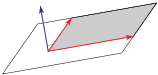
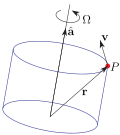
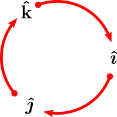

Section 1.2 Vectors
In many of our applications in 2d and 3d, we will encounter quantities that have both a magnitude (like a distance) and also a direction. Such quantities are called vectors. That is, a vector is a quantity which has both a direction and a magnitude, like a velocity. If you are moving, the magnitude (length) of your velocity vector is your speed (distance travelled per unit time) and the direction of your velocity vector is your direction of motion. To specify a vector in three dimensions you have to give three components, just as for a point. To draw the vector with components \(a, b, c \) you can draw an arrow from the point \((0,0,0)\) to the point \((a,b,c)\text{.}\)
Similarly, to specify a vector in two dimensions you have to give two components and to draw the vector with components \(a, b \) you can draw an arrow from the point \((0,0)\) to the point \((a,b)\text{.}\)
There are many situations in which it is preferable to draw a vector with its tail at some point other than the origin. For example, it is natural to draw the velocity vector of a moving particle with the tail of the velocity vector at the position of the particle, whether or not the particle is at the origin. The sketch below shows a moving particle and its velocity vector at two different times.
As a second example, suppose that you are analyzing the motion of a pendulum. There are three forces acting on the pendulum bob: gravity \(\vg\text{,}\) which is pulling the bob straight down, tension \(\vt\) in the rod, which is pulling the bob in the direction of the rod, and air resistance \(\vr\text{,}\) which is pulling the bob in a direction opposite to its direction of motion. All three forces are acting on the bob. So it is natural to draw all three arrows representing the forces with their tails at the bob.
In this text, we will used bold faced letters, like \(\vv\text{,}\) \(\vt\text{,}\) \(\vg\text{,}\) to designate vectors. In handwriting, it is clearer to use a small overhead arrow 1 , as in \(\vec{v}\text{,}\) \(\vec{t}\text{,}\) \(\vec{g}\text{,}\) instead. Also, when we want to emphasise that some quantity is a number, rather than a vector, we will call the number a scalar.
Both points and vectors in 2d are specified by two numbers. Until you get used to this, it might confuse you sometimes — does a given pair of numbers represent a point or a vector? To distinguish 2 between the components of a vector and the coordinates of the point at its head, when its tail is at some point other than the origin, we shall use angle brackets rather than round brackets around the components of a vector. For example, the figure below shows the two-dimensional vector \(\llt 2,1\rgt\) drawn in three different positions. In each case, when the tail is at the point \((u,v)\) the head is at \((2+u,1+v)\text{.}\) We warn you that, out in the real world 3 , no one uses notation that distinguishes between components of a vector and the coordinates of its head — usually round brackets are used for both. It is up to you to keep straight which is being referred to.
By way of summary,
Definition 1.2.1.
we use
- bold faced letters, like \(\vv\text{,}\) \(\vt\text{,}\) \(\vg\text{,}\) to designate vectors, and
- angle brackets, like \(\llt 2,1\rgt\text{,}\) around the components of a vector, but use
- round brackets, like \((2,1)\text{,}\) around the coordinates of a point, and use
- “scalar” to emphasise that some quantity is a number, rather than a vector.
Subsection 1.2.1 Addition of Vectors and Multiplication of a Vector by a Scalar
Just as we have done many times in the CLP texts, when we define a new type of object, we want to understand how it interacts with the basic operations of addition and multiplication. Vectors are no different, and we shall shortly see a natural way to define addition of vectors. Multiplication will be more subtle, and we shall start with multiplication of a vector by a number (rather than with multiplication of a vector by another vector).
By way of motivation for the definitions of addition and multiplication by a number, imagine that we are out for a walk on the \(xy\)-plane.
- Suppose that we take a step and, in doing so, we move \(a_1\) units parallel to the \(x\)-axis and \(a_2\) units parallel to the \(y\)-axis. Then we say that \(\llt a_1, a_2\rgt\) is the displacement vector for the step. Suppose now that we take a second step which moves us an additional \(b_1\) units parallel to the \(x\)-axis and an additional \(b_2\) units parallel to the \(y\)-axis, as in the figure on the left below. So the displacement vector for the second step is \(\llt b_1, b_2\rgt\text{.}\) All together, we have moved \(a_1+b_1\) units parallel to the \(x\)-axis and \(a_2+b_2\) units parallel to the \(y\)-axis. The displacement vector for the two steps combined is \(\llt a_1+b_1, a_2+b_2\rgt\text{.}\) We shall define the sum of \(\llt a_1, a_2\rgt\) and \(\llt b_1, b_2\rgt\text{,}\) denoted by \(\llt a_1, a_2\rgt+\llt b_1,b_2\rgt\text{,}\) to be \(\llt a_1+b_1, a_2+b_2\rgt\text{.}\)
- Suppose now that, instead, we decide to step in the same direction as the first step above, but to move twice as far, as in the figure on the right below. That is, our step will move us \(2a_1\) units in the direction of the \(x\)-axis and \(2a_2\) units in the direction of the \(y\)-axis and the corresponding displacement vector will be \(\llt 2a_1, 2a_2\rgt\text{.}\) We shall define the product of the number \(2\) and the vector \(\llt a_1, a_2\rgt\text{,}\) denoted by \(2\llt a_1, a_2\rgt\text{,}\) to be \(\llt 2a_1, 2a_2\rgt\text{.}\)
Here are the formal definitions.
Definition 1.2.2. Adding Vectors and Multiplying a Vector by a Number.
These two operations have the obvious definitions
and similarly in three dimensions.
Pictorially, you add the vector \(\vb\) to the vector \(\va\) by drawing \(\vb\) with its tail at the head of \(\va\) and then drawing a vector from the tail of \(\va\) to the head of \(\vb\text{,}\) as in the figure on the left below. For a number \(s\text{,}\) we can draw the vector \(s\va\text{,}\) by just
- changing the vector \(\va\)'s length by the factor \(|s|\text{,}\) and,
- if \(s \lt 0\text{,}\) reversing the arrow's direction,
as in the other two figures below.
The special case of multiplication by \(s=-1\) appears so frequently that \((-1)\va\) is given the shorter notation \(-\va\text{.}\) That is,
Of course \(\va+(-\va)\) is \(\vZero\text{,}\) the vector all of whose components are zero.
To subtract \(\vb\) from \(\va\) pictorially, you may add \(-\vb\) (which is drawn by reversing the direction of \(\vb\)) to \(\va\text{.}\) Alternatively, if you draw \(\va\) and \(\vb\) with their tails at a common point, then \(\va-\vb\) is the vector from the head of \(\vb\) to the head of \(\va\text{.}\) That is, \(\va-\vb\) is the vector you must add to \(\vb\) in order to get \(\va\text{.}\)
The operations of addition and multiplication by a scalar that we have just defined are quite natural and rarely cause any problems, because they inherit from the real numbers the properties of addition and multiplication that you are used to.
Theorem 1.2.3. Properties of Addition and Scalar Multiplication.
Let \(\va\text{,}\) \(\vb\) and \(\vc\) be vectors and \(s\) and \(t\) be scalars. Then
We have just been introduced to many definitions. Let's see some of them in action.
Example 1.2.4.
For example, if
then
and
Definition 1.2.5.
Two vectors \(\va\) and \(\vb\)
- are said to be parallel if \(\ \va= s\,\vb\ \) for some nonzero real number \(s\) and
- are said to have the same direction if \(\ \va=s\,\vb\ \) for some number \(s \gt 0\text{.}\)
There are some vectors that occur sufficiently commonly that they are given special names. One is the vector \(\vZero\text{.}\) Some others are the “standard basis vectors”.
Definition 1.2.6.
The standard basis vectors in two dimensions are
The standard basis vectors in three dimensions are
We'll explain the little hats in the notation \(\hi\text{,}\) \(\hj\text{,}\) \(\hk\) shortly. Some people rename \(\hi\text{,}\) \(\hj\) and \(\hk\) to \(\he_1\text{,}\) \(\he_2\) and \(\he_3\) respectively. Using the above properties we have, for all vectors,
A sum of numbers times vectors, like \(a_1\hi+a_2\hj\) is called a linear combination of the vectors. Thus all vectors can be expressed as linear combinations of the standard basis vectors. This makes basis vectors very helpful in computations. The standard basis vectors are unit vectors, meaning that they are of length one, where the length of a vector \(\va\) is denoted 4 \(|\va|\) and is defined by
Definition 1.2.7. Length of a Vector.
A unit vector is a vector of length one. We'll sometimes use the accent \(\hat{\ }\) to emphasise that the vector \(\hat\va\) is a unit vector. That is, \(|\hat\va|=1\text{.}\)
Example 1.2.8.
Recall that multiplying a vector \(\va\) by a positive number \(s\text{,}\) changes the length of the vector by a factor \(s\) without changing the direction of the vector. So (assuming that \(|\va|\ne 0)\) \(\frac{\va}{|\va|}\) is a unit vector that has the same direction as \(\va\text{.}\) For example, \(\frac{\llt 1,1,1\rgt}{\sqrt{3}}\) is a unit vector that points in the same direction as \(\llt 1,1,1\rgt\text{.}\)
Example 1.2.9.
We go for a walk on a flat Earth. We use a coordinate system with the positive x-axis pointing due east and the positive y-axis pointing due north. We
- start at the origin and
- walk due east for 4 units and then
- walk northeast for \(5\sqrt{2}\) units and then
- head towards the point \((0,11)\text{,}\) but we only go
- one third of the way.
We will now use vectors to figure out our final location.
- On the first leg of our walk, we go 4 units in the positive \(x\)-direction. So our displacement vector — the vector whose tail is at our starting point and whose head is at the end point of the first leg — is \(\llt 4,0\rgt\text{.}\) As we started at \((0,0)\) we finish the first leg of the walk at \((4,0)\text{.}\)
- On the second leg of our walk, our direction of motion is northeast, i.e. is \(45^\circ\) above the direction of the positive \(x\)-axis. Looking at the figure on the right above, we see that our displacement vector, for the second leg of the walk, has to be in the same direction as the vector \(\llt 1,1\rgt\text{.}\) So our displacement vector is the vector of length \(5\sqrt{2}\) with the same direction as \(\llt 1,1\rgt\text{.}\) The vector \(\llt 1,1\rgt\) has length \(\sqrt{1^2+1^2}=\sqrt{2}\) and so \(\frac{\llt 1,1\rgt}{\sqrt{2}}\) has length one and our displacement vector is\begin{equation*} 5\sqrt{2}\ \frac{\llt 1,1\rgt}{\sqrt{2}} =5 \llt 1,1\rgt =\llt 5,5\rgt \end{equation*}If we draw this displacement vector, \(\llt 5,5\rgt\) with its tail at \((4,0)\text{,}\) the starting point of the second leg of the walk, then its head will be at \((4+5, 0+5)=(9,5)\) and that is the end point of the second leg of the walk.
- On the final leg of our walk, we start at \((9,5)\) and walk towards \((0,11)\text{.}\) The vector from \((9,5)\) to \((0,11)\) is \(\llt 0-9\,,\,11-5\rgt =\llt -9,6\rgt\text{.}\) As we go only one third of the way, our final displacement vector is\begin{equation*} \frac{1}{3}\llt -9,6\rgt =\llt -3,2\rgt \end{equation*}If we draw this displacement vector with its tail at \((9,5)\text{,}\) the starting point of the final leg, then its head will be at \((9-3, 5+2)=(6,7)\) and that is the end point of the final leg of the walk, and our final location.
Subsection 1.2.2 The Dot Product
Let's get back to the arithmetic operations of addition and multiplication. We will be using both scalars and vectors. So, for each operation there are three possibilities that we need to explore:
- “scalar plus scalar”, “scalar plus vector” and “vector plus vector”
- “scalar times scalar”, “scalar times vector” and “vector times vector”
We have been using “scalar plus scalar” and “scalar times scalar” since childhood. “vector plus vector” and “scalar times vector” were just defined above. There is no sensible way to define “scalar plus vector”, so we won't. This leaves “vector times vector”. There are actually two widely used such products. The first is the dot product, which is the topic of this section, and which is used to easily determine the angle \(\theta\) (or more precisely, \(\cos\theta\)) between two vectors. We'll get to the second, the cross product, later.
Here is preview of what we will do in this dot product subsection §1.2.2. We are going to give two formulae for the dot product, \(\va\cdot\vb\text{,}\) of the pair of vectors \(\va=\llt a_1,a_2,a_3\rgt\) and \(\vb=\llt b_1,b_2,b_3\rgt\text{.}\)
- The first formula is \(\va\cdot\vb = a_1b_1+a_2b_2+a_3b_3\text{.}\) We will take it as our official definition of \(\va\cdot\vb\text{.}\) This formula provides us with an easy way to compute dot products.
-
The second formula is \(\va\cdot\vb=|\va|\,|\vb|\,\cos\theta\text{,}\) where \(\theta\) is the angle between \(\va\) and \(\vb\text{.}\)
We will show, in Theorem 1.2.11 below, that this second formula always gives the same answer as the first formula. The second formula provides us with an easy way to determine the angle between two vectors. In particular, it provides us with an easy way to test whether or not two vectors are perpendicular to each other. For example, the vectors \(\llt 1,2,3\rgt\) and \(\llt -1,-1,1\rgt\) have dot product
\begin{equation*} \llt 1,2,3\rgt\cdot\llt -1,-1,1\rgt = 1\times(-1)+2\times(-1)+3\times 1=0 \end{equation*}This tell us as the angle \(\theta\) between the two vectors obeys \(\cos\theta=0\text{,}\) so that \(\theta=\frac{\pi}{2}\text{.}\) That is, the two vectors are perpendicular to each other.
After we give our official definition of the dot product in Definition 1.2.10, and give the important properties of the dot product, including the formula \(\va\cdot\vb=|\va|\,|\vb|\,\cos\theta\text{,}\) in Theorem 1.2.11, we'll give some examples. Finally, to see the dot product in action, we'll define what it means to project one vector on another vector and give an example.
Definition 1.2.10. Dot Product.
The dot product of the vectors \(\va\) and \(\vb\) is denoted \(\va\cdot\vb\) and is defined by
in two and three dimensions respectively.
The properties of the dot product are as follows:
Theorem 1.2.11. Properties of the Dot Product.
Let \(\va\text{,}\) \(\vb\) and \(\vc\) be vectors and let \(s\) be a scalar. Then
Proof.
Properties 0 through 5 are almost immediate consequences of the definition. For example, for property 3 (which is called the distributive law) in dimension 2,
Property 6 is sufficiently important that it is often used as the definition of dot product. It is not at all an obvious consequence of the definition. To verify it, we just write \(|\va-\vb|^2\) in two different ways. The first expresses \(|\va-\vb|^2\) in terms of \(\va\cdot\vb\text{.}\) It is
Here, \({\buildrel 1 \over =}\text{,}\) for example, means that the equality is a consequence of property 1. The second way we write \(|\va-\vb|^2\) involves \(\cos\theta\) and follows from the cosine law for triangles. Just in case you don't remember the cosine law, we'll derive it right now! Start by applying Pythagoras to the shaded triangle in the right hand figure of
That triangle is a right triangle whose hypotenuse has length \(|\va-\vb|\) and whose other two sides have lengths \(\big(|\vb|-|\va|\cos\theta\big)\) and \(|\va|\sin\theta\text{.}\) So Pythagoras gives
This is precisely the cosine law 5 . Observe that, when \(\theta=\tfrac{\pi}{2}\text{,}\) this reduces to, (surprise!) Pythagoras' theorem.
Setting our two expressions for \(|\va-\vb|^2\) equal to each other,
cancelling the \(|\va|^2\) and \(|\vb|^2\) common to both sides
and dividing by \(-2\) gives
which is exactly property 6.
Property 7 follows directly from property 6. First note that the dot product \(\va\cdot\vb=|\va|\,|\vb|\,\cos\theta\) is zero if and only if at least one of the three factors \(|\va|,\ |\vb|,\ \cos\theta\) is zero. The first factor is zero if and only if \(\va=\vZero \text{.}\) The second factor is zero if and only if \(\vb=\vZero \text{.}\) The third factor is zero if and only if \(\theta=\pm\tfrac{\pi}{2}+2k\pi\text{,}\) for some integer \(k\text{,}\) which in turn is true if and only if \(\va\) and \(\vb\) are mutually perpendicular.
Because of Property 7 of Theorem 1.2.11, the dot product can be used to test whether or not two vectors are perpendicular to each other. That is, whether or not the angle between the two vectors is \(90^\circ\text{.}\) Another name 6 for “perpendicular” is “orthogonal”. Testing for orthogonality is one of the main uses of the dot product.
Example 1.2.12.
Consider the three vectors
Their dot products
tell us that \(\vc\) is perpendicular to both \(\va\) and \(\vb\text{.}\) Since both \(|\va|=|\vb|=\sqrt{1^2+1^2+0^2}=\sqrt{2}\) the first dot product tells us that the angle, \(\theta\text{,}\) between \(\va\) and \(\vb\) obeys
Dot products are also used to compute projections. First, here's the definition.
Definition 1.2.13. Projection.
Draw two vectors, \(\va\) and \(\vb\text{,}\) with their tails at a common point and drop a perpendicular from the head of \(\va\) to the line that passes through both the head and tail of \(\vb\text{.}\) By definition, the projection of the vector \(\va\) on the vector \(\vb\) is the vector from the tail of \(\vb\) to the point on the line where the perpendicular hits.
Think of the projection of \(\va\) on \(\vb\) as the part of \(\va\) that is in the direction of \(\vb\text{.}\)
Now let's develop a formula for the projection of \(\va\) on \(\vb\text{.}\) Denote by \(\theta\) the angle between \(\va\) and \(\vb\text{.}\) If \(|\theta|\) is no more than \(90^\circ\text{,}\) as in the figure on the left above, the length of the projection of \(\va\) on \(\vb\) is \(|\va|\cos\theta\text{.}\) By Property 6 of Theorem 1.2.11, \(|\va|\cos\theta=\va\cdot\vb/|\vb|\text{,}\) so the projection is a vector whose length is \(\va\cdot\vb/|\vb|\) and whose direction is given by the unit vector \(\vb/|\vb|\text{.}\) Hence
If \(|\theta|\) is larger than \(90^\circ\text{,}\) as in the figure on the right above, the projection has length \(|\va|\,\cos(\pi-\theta)=-|\va|\cos\theta=-\va\cdot\vb/|\vb|\) and direction \(-\vb/|\vb|\text{.}\) In this case
too. So the formula
Equation 1.2.14.
is applicable whenever \(\vb\ne\vZero \text{.}\) We may rewrite \({\rm proj}_{\vb}\,\va=\frac{\va\cdot\vb}{|\vb|}\,\frac{\vb}{|\vb|}\text{.}\) The coefficient, \(\frac{\va\cdot\vb}{|\vb|}\text{,}\) of the unit vector \(\frac{\vb}{|\vb|}\text{,}\) is called the component of \(\va\) in the direction \(\vb\text{.}\) As a special case, if \(\vb\) happens to be a unit vector, which, for emphasis, we'll now write has \(\hat\vb\text{,}\) the projection formula simplifies to
Equation 1.2.15.
Example 1.2.16.
In this example, we will find the projection of the vector \(\llt 0,3\rgt\) on the vector \(\llt 1,1\rgt\text{,}\) as in the figure
By Equation 1.2.14 with \(\va=\llt 0,3\rgt\) and \(\vb=\llt 1,1\rgt\text{,}\) that projection is
One use of projections is to “resolve forces”. There is an example in the next (optional) section.
Subsection 1.2.3 (Optional) Using Dot Products to Resolve Forces — The Pendulum
Model a pendulum by a mass \(m\) that is connected to a hinge by an idealized rod that is massless and of fixed length \(\ell\text{.}\) Denote by \(\theta\) the angle between the rod and vertical. The forces acting on the mass are
- gravity, which has magnitude \(mg\) and direction \(\llt 0,-1\rgt\text{,}\)
- tension in the rod, whose magnitude \(\tau(t)\) automatically adjusts itself so that the distance between the mass and the hinge is fixed at \(\ell\) (so that the rod does not stretch or contract) and whose direction is always parallel to the rod,
- and possibly some frictional forces, like friction in the hinge and air resistance. Assume that the total frictional force has magnitude proportional 7 to the speed of the mass and has direction opposite to the direction of motion of the mass. We'll call the constant of proportionality \(\beta\text{.}\)
If we use a coordinate system centered on the hinge, the \((x,y)\) coordinates of the mass at time \(t\) are
where \(\theta(t)\) is the angle between the rod and vertical at time \(t\text{.}\) We are now going to use Newton's law of motion
to determine now \(\theta\) evolves in time. By definition, the velocity and acceleration vectors 8 for the position vector \(\llt x(t),y(t)\rgt\) are
So, the velocity and acceleration vectors of our mass are
The negative of the velocity vector is \(- \ell\, \diff{\theta}{t}\llt \cos\theta,\sin\theta\rgt\text{,}\) so the total frictional force is
with \(\beta\) our constant of proportionality.
The vector
has magnitude \(\tau(t)\) and direction parallel to the rod pointing from the mass towards the hinge and so is the force due to tension in the rod.
Hence, for this physical system, Newton's law of motion is
This is a rather complicated looking equation. Writing out its \(x\)- and \(y\)-components doesn't help. They also look complicated. Instead, the equation can be considerably simplified (and consequently better understood) by “taking its components parallel to and perpendicular to the direction of motion”. From the velocity vector \(\vv(t)\text{,}\) we see that \(\llt \cos\theta(t),\sin\theta(t)\rgt \) is a unit vector parallel to the direction of motion at time \(t\text{.}\) Recall, from 1.2.15, that the projection of any vector \(\vb\) on any unit vector \(\hat\vd\) (with the “hat” on \(\hat\vd\) reminding ourselves that the vector is a unit vector) is
The coefficient \(\vb\cdot \hat\vd\) is, by definition, the component of \(\vb\) in the direction \(\hat\vd\text{.}\) So, by dotting both sides of the equation of motion \((*)\) with \(\hat\vd=\llt \cos\theta(t),\sin\theta(t)\rgt \text{,}\) we extract the component parallel to the direction of motion. Since
this gives
which is much cleaner than \((*)\text{!}\) When \(\theta\) is small, we can approximate \(\sin\theta\approx\theta\) and get the equation
which is easily solved. There are systematic procedures for finding the solution, but we'll just guess.
When there is no friction (so that \(\beta=0\)), we would expect the pendulum to just oscillate. So it is natural to guess
which is an oscillation with (unknown) amplitude \(A\text{,}\) frequency \(\omega\) (radians per unit time) and phase \(\delta\text{.}\) Substituting this guess into the left hand side, \(\theta'' + \tfrac{g}{\ell}\theta\text{,}\) yields
which is zero if \(\omega=\sqrt{g/\ell}\text{.}\) So \(\ \theta(t)=A\sin(\omega t-\delta)\ \) is a solution for any amplitude \(A\) and phase \(\delta\text{,}\) provided the frequency \(\omega=\sqrt{g/\ell}\text{.}\)
When there is some, but not too much, friction, so that \(\beta \gt 0\) is relatively small, we would expect “oscillation with decaying amplitude”. So we guess
for some constant decay rate \(\gamma\text{,}\) to be determined. With this guess,
and the left hand side
vanishes if \(\gamma^2-\omega^2-\frac{\beta}{m}\gamma+\tfrac{g}{\ell}=0\) and \(-2\gamma\omega+\frac{\beta}{m}\omega=0.\) The second equation tells us the decay rate \(\gamma=\tfrac{\beta}{2m}\) and then the first tells us the frequency
When there is a lot of friction (namely when \(\tfrac{\beta^2}{4m^2} \gt \tfrac{g}{\ell}\text{,}\) so that the frequency \(\omega\) is not a real number), we would expect damping without oscillation and so would guess \(\theta(t)=Ae^{-\gamma t}\text{.}\) You can determine the allowed values of \(\gamma\) by substituting this guess in.
To extract the components perpendicular to the direction of motion, we dot with \(\llt -\sin\theta,\cos\theta\rgt \) rather than \(\llt \cos\theta,\sin\theta\rgt \text{.}\) Note that, because
the vector \(\llt -\sin\theta,\cos\theta\rgt \) really is perpendicular to the direction of motion. Since
dotting both sides of the equation of motion \((*)\) with \(\llt -\sin\theta,\cos\theta\rgt \) gives
This equation just determines the tension
in the rod, once you know \(\theta(t)\text{.}\)
Subsection 1.2.4 (Optional) Areas of Parallelograms
A parallelogram is naturally determined by the two vectors that define its sides. We'll now develop a formula for the area of a parallelogram in terms of these two vectors.
Construct a parallelogram as follows. Pick two vectors \(\llt a,b\rgt \) and \(\llt c,d\rgt \text{.}\) Draw them with their tails at a common point. Then draw \(\llt a,b\rgt \) a second time with its tail at the head of \(\llt c,d\rgt \) and draw \(\llt c,d\rgt \) a second time with its tail at the head of \(\llt a,b\rgt \text{.}\) If the common point is the origin, you get a picture like the figure below.
Any parallelogram can be constructed like this if you pick the common point and two vectors appropriately. Let's compute the area of the parallelogram. The area of the large rectangle with vertices \((0,0),\ (0, b+d),\ (a+c,0)\) and \((a+c,b+d)\) is \((a+c)(b+d)\text{.}\) The parallelogram we want can be extracted from the large rectangle by deleting the two small rectangles (each of area \(bc\)), and the two lightly shaded triangles (each of area \(\half cd\)), and the two darkly shaded triangles (each of area \(\half ab\)). So the desired
In the above figure, we have implicitly assumed that \(a,\ b,\ c,\ d\ge 0\) and \(d/c\ge b/a\text{.}\) In words, we have assumed that both vectors \(\llt a,b\rgt ,\ \llt c,d\rgt \) lie in the first quadrant and that \(\llt c,d\rgt \) lies above \(\llt a,b\rgt \text{.}\) By simply interchanging \(a\leftrightarrow c\) and \(b\leftrightarrow d\) in the picture and throughout the argument, we see that when \(a,\ b,\ c,\ d\ge 0\) and \(b/a\ge d/c\text{,}\) so that the vector \(\llt c,d\rgt \) lies below \(\llt a,b\rgt \text{,}\) the area of the parallelogram is \(bc-ad\text{.}\) In fact, all cases are covered by the formula
Equation 1.2.17.
Given two vectors \(\llt a,b\rgt \) and \(\llt c,d\rgt \text{,}\) the expression \(ad-bc\) is generally written
and is called the determinant of the matrix 9
with rows \(\llt a,b\rgt \) and \(\llt c,d\rgt \text{.}\) The determinant of a \(2\times 2\) matrix is the product of the diagonal entries minus the product of the off-diagonal entries.
There is a similar formula in three dimensions. Any three vectors \(\va=\llt a_1,a_2,a_3\rgt ,\ \vb=\llt b_1,b_2,b_3\rgt \) and \(\vc=\llt c_1,c_2,c_3\rgt \) in three dimensions

determine a parallelepiped (three dimensional parallelogram). Its volume is given by the formula
Equation 1.2.18.
The determinant of a \(3\times 3\) matrix can be defined in terms of some \(2\times 2\) determinants by
This formula is called “expansion along the top row”. There is one term in the formula for each entry in the top row of the \(3\times 3\) matrix. The term is a sign times the entry itself times the determinant of the \(2\times 2\) matrix gotten by deleting the row and column that contains the entry. The sign alternates, starting with a “\(+\)”.
We shall not prove this formula completely here 10 . It gets a little tedious. But, there is one case in which we can easily verify that the volume of the parallelepiped is really given by the absolute value of the claimed determinant. If the vectors \(\vb\) and \(\vc\) happen to lie in the \(xy\) plane, so that \(b_3=c_3=0\text{,}\) then
The first factor, \(a_3\text{,}\) is the \(z\)-coordinate of the one vector not contained in the \(xy\)-plane. It is (up to a sign) the height of the parallelepiped. The second factor is, up to a sign, the area of the parallelogram determined by \(\vb\) and \(\vc\text{.}\) This parallelogram forms the base of the parallelepiped. The product is indeed, up to a sign, the volume of the parallelepiped. That the formula is true in general is a consequence of the fact (that we will not prove) that the value of a determinant does not change when one rotates the coordinate system and that one can always rotate our coordinate axes around so that \(\vb\) and \(\vc\) both lie in the \(xy\)-plane.
Subsection 1.2.5 The Cross Product
We have already seen two different products involving vectors — the multiplication of a vector by a scalar and the dot product of two vectors. The dot product of two vectors yields a scalar. We now introduce another product of two vectors, called the cross product. The cross product of two vectors will give a vector. There are applications which have two vectors as inputs and produce one vector as an output, and which are related to the cross product. Here is a very brief mention of two such applications. We will look at them in much more detail later.
-
Consider a parallelogram in three dimensions. A parallelogram is naturally determined by the two vectors that define its sides. One measure of the size of a parallelogram is its area. One way to specify the orientation of the parallelogram is to give a vector that is perpendicular to it. A very compact way to encode both the area and the orientation of the parallelogram is to give a vector whose direction is perpendicular to the plane in which it lies and whose magnitude is its area. We shall see that such a vector can be easily constructed by taking the cross product (definition coming shortly) of the two vectors that give the sides of the parallelogram.
 -
Imagine a rigid body which is rotating at a rate \(\Omega\) radians per second about an axis whose direction is given by the unit vector \(\hat\va\text{.}\) Let \(P\) be any point on the body. We shall see, in the (optional) §1.2.7, that the velocity, \(\vv\text{,}\) of the point \(P\) is the cross product (again, definition coming shortly) of the vector \(\Om\hat\va\) with the vector \(\vr\) from any point on the axis of rotation to \(P\text{.}\)

Finally, here is the definition of the cross product. Note that it applies only to vectors in three dimensions.
Definition 1.2.19. Cross Product.
The cross product of the vectors \(\va=\llt a_1,a_2,a_3\rgt\) and \(\vb=\llt b_1,b_2,b_3\rgt\) is denoted \(\va\times\vb\) and is defined by
Note that each component has the form \(a_ib_j-a_jb_i\text{.}\) The index \(i\) of the first \(a\) in component number \(k\) of \(\va\times\vb\) is just after \(k\) in the list \(1,2,3,1,2,3,1,2,3,\cdots\text{.}\) The index \(j\) of the first \(b\) is just before \(k\) in the list.
For example, for component number \(k=3\text{,}\)
There is a much better way to remember this definition. Recall that a \(2\times 2\) matrix is an array of numbers having two rows and two columns and that the determinant of a \(2\times 2\) matrix is defined by
It is the product of the entries on the diagonal minus the product of the entries not on the diagonal.
A \(3\times 3\) matrix is an array of numbers having three rows and three columns.
You will shortly see why the entries in the top row have been given the rather peculiar names \(i\text{,}\) \(j\) and \(k\text{.}\) The determinant of a \(3\times 3\) matrix can be defined in terms of some \(2\times 2\) determinants by
This formula is called “expansion of the determinant along the top row”. There is one term in the formula for each entry in the top row. The term is a sign times the entry itself times the determinant of the \(2\times 2\) matrix gotten by deleting the row and column that contains the entry. The sign alternates, starting with a \(+\text{.}\) If we now replace \(i\) by \(\hi\text{,}\) \(j\) by \(\hj\) and \(k\) by \(\hk\text{,}\) we get exactly the formula for \(\va\times \vb\) of Definition 1.2.19. That is the reason for the peculiar choice of names for the matrix entries. So
is a mnemonic device for remembering the definition of \(\va\times\vb\text{.}\) It is also good from the point of view of evaluating \(\va\times\vb\text{.}\) Here are several examples in which we use the determinant mnemonic device to evaluate cross products.
Example 1.2.20.
In this example, we'll use the mnemonic device to compute two very simple cross products. First
Second
Note that, unlike most (or maybe even all) products that you have seen before, \(\hi\times\hj\) is not the same as \(\hj\times\hi\text{!}\)
Example 1.2.21.
In this example, we'll use the mnemonic device to compute two more complicated cross products. Let \(\va=\llt 1,2,3 \rgt\) and \(\vb=\llt 1,-1,2 \rgt\text{.}\) First
Second
Here are some important observations.
- The vectors \(\va\times\vb\) and \(\vb\times\va\) are not the same! In fact \(\vb\times\va=-\va\times\vb\text{.}\) We shall see in Theorem 1.2.23 below that this was not a fluke.
- The vector \(\va\times\vb\) has dot product zero with both \(\va\) and \(\vb\text{.}\) So the vector \(\va\times\vb\) is prependicular to both \(\va\) and \(\vb\text{.}\) We shall see in Theorem 1.2.23 below that this was also not a fluke.
Example 1.2.22.
Yet again we use the mnemonic device to compute a more complicated cross product. This time let \(\va=\llt 3,2,1 \rgt\) and \(\vb=\llt 6,4,2 \rgt\text{.}\) Then
We shall see in Theorem 1.2.23 below that it is not a fluke that the cross product is \(\vZero\text{.}\) It is a consequence of the fact that \(\va\) and \(\vb=2\va\) are parallel.
We now move on to learning about the properties of the cross product. Our first properties lead up to a more intuitive geometric definition of \(\va\times\vb\text{,}\) which is better for interpreting \(\va\times\vb\text{.}\) These properties of the cross product, which state that \(\va\times\vb\) is a vector and then determine its direction and length, are as follows. We will collect these properties, and a few others, into a theorem shortly.
- (0)
\(\va,\vb\) are vectors in three dimensions and \(\va\times\vb\) is a vector in three dimensions.
- (1)
\(\va\times\vb\) is perpendicular to both \(\va\) and \(\vb\text{.}\)
Proof.
To check that \(\va\) and \(\va\times \vb\) are perpendicular, one just has to check that the dot product \(\va\cdot(\va\times \vb)=0\text{.}\) The six terms in
cancel pairwise. The computation showing that \(\vb\cdot(\va\times \vb)=0\) is similar.
- (2)
-
\begin{align*} |\va\times\vb| \amp = |\va|\,|\vb|\sin\theta \text{ where } 0\le\theta\le\pi \text{ is the angle between } \va,\vb\\ \amp = \text{the area of the parallelogram with sides } \va, \vb \end{align*}
Proof.
The formula \(|\va\times\vb|=|\va|\,|\vb|\sin\theta\) is gotten by verifying that
is equal to
\begin{align*} |\va|^2\,|\vb|^2\sin^2\theta &=|\va|^2|\vb|^2(1-\cos^2\theta)\\ &=|\va|^2|\vb|^2-(\va\cdot\vb)^2\\ &=\big(a_1^2+a_2^2+a_3^2\big)\big(b_1^2+b_2^2+b_3^2\big) -\big(a_1b_1+a_2b_2+a_3b_3\big)^2\\ &=a_1^2b_2^2+a_1^2b_3^2+a_2^2b_1^2+a_2^2b_3^2+a_3^2b_1^2+a_3^2b_2^2\\ &\hskip0.5in -\big(2a_1b_1a_2b_2+2a_1b_1a_3b_3+2a_2b_2a_3b_3\big) \end{align*}To see that \(|\va|\,|\vb|\sin\theta\) is the area of the parallelogram with sides \(\va\) and \(\vb\text{,}\) just recall that the area of any parallelogram is given by the length of its base times its height. Think of \(\va\) as the base of the parallelogram. Then \(|\va|\) is the length of the base and \(|\vb|\sin\theta\) is the height.
These properties almost determine \(\va\times\vb\text{.}\) Property 1 forces the vector \(\va\times\vb\) to lie on the line perpendicular to the plane containing \(\va\) and \(\vb\text{.}\) There are precisely two vectors on this line that have the length given by property 2. In the left hand figure of
the two vectors are labeled \(\vc\) and \(\vd\text{.}\) Which of these two candidates is correct is determined by the right hand rule 11 , which says that if you form your right hand into a fist with your fingers curling from \(\va\) to \(\vb\text{,}\) then when you stick your thumb straight out from the fist, it points in the direction of \(\va\times\vb\text{.}\) This is illustrated in the figure on the right above 12 . The important special cases
- (3)
-
\begin{equation*} \hi\times\hj=\phantom{-}\hk,\ \ \ \hj\times\hk=\phantom{-}\hi,\ \ \ \hk\times\hi=\phantom{-}\hj \end{equation*}\begin{equation*} \hj\times\hi=-\hk,\ \ \ \hk\times\hj=-\hi,\ \ \ \hi\times\hk=-\hj \end{equation*}
all follow directly from the definition of the cross product (see, for example, Example 1.2.20) and all obey the right hand rule. Combining properties 1, 2 and the right hand rule give the geometric definition of \(\va\times\vb\text{.}\) To remember these three special cases, just remember this figure.
The product of any two standard basis vectors, taken in the order of the arrows in the figure, is the third standard basis vector. Going against the arrows introduces a minus sign.
- (4)
-
\begin{equation*} \va\times\vb=|\va|\,|\vb|\sin\theta\ \hn \end{equation*}
where \(\theta\) is the angle between \(\va, \vb\text{,}\) \(|\hn|=1,\ \hn\perp\va,\vb\text{,}\) and \((\va,\vb,\hn)\) obey the right hand rule.
https://commons.wikimedia.org/wiki/File:Right_hand_rule_simple.png
Outline of Proof.
We have already seen that the right hand side has the correct length and, except possibly for a sign, direction. To check that the right hand rule holds in general, rotate your coordinate system around 13 so that \(\va\) points along the positive \(x\) axis and \(\vb\) lies in the \(xy\)-plane with positive \(y\) component. That is \(\va=\alpha\hi\) and \(\vb=\beta\hi+\gamma\hj\) with \(\alpha,\gamma\ge 0\text{.}\) Then
The first term vanishes by property 2, because the angle \(\theta\) between \(\hi\) and \(\hi\) is zero. So, by property 3, \(\va\times\vb= \alpha\gamma\hk\) points along the positive \(z\) axis, which is consistent with the right hand rule.
The analog of property 7 of the dot product (which says that \(\va\cdot\vb\) is zero if and only if \(\va=\vZero\) or \(\vb=\vZero\) or \(\va\perp\vb\)) follows immediately from property 2.
- (5)
- \begin{equation*} \va\times\vb=\vZero\iff \va=\vZero \text{ or } \vb=\vZero \text{ or } \va\parallel\vb. \end{equation*}
The remaining properties are all tools for helping do computations with cross products. Here is a theorem which summarizes the properties of the cross product. We have already seen the first five. The other properties are all tools for helping do computations with cross products.
Theorem 1.2.23. Properties of the Cross Product.
- (0)
\(\va,\vb\) are vectors in three dimensions and \(\va\times\vb\) is a vector in three dimensions.
- (1)
\(\va\times\vb\) is perpendicular to both \(\va\) and \(\vb\text{.}\)
- (2)
-
\begin{align*} |\va\times\vb| \amp = |\va|\,|\vb|\sin\theta \text{ where } 0\le\theta\le\pi \text{ is the angle between } \va,\vb\\ \amp = \text{the area of the parallelogram with sides } \va, \vb \end{align*}
- (3)
- \begin{equation*} \hi\times\hj=\phantom{-}\hk,\ \ \ \hj\times\hk=\phantom{-}\hi,\ \ \ \hk\times\hi=\phantom{-}\hj \end{equation*}
- (4)
-
\begin{equation*} \va\times\vb=|\va|\,|\vb|\sin\theta\ \hn \end{equation*}
where \(\theta\) is the angle between \(\va, \vb\text{,}\) \(|\hn|=1,\ \hn\perp\va,\vb\text{,}\) and \((\va,\vb,\hn)\) obey the right hand rule.
- (5)
- \begin{equation*} \va\times\vb=\vZero\iff \va=\vZero \text{ or } \vb=\vZero \text{ or } \va\parallel\vb. \end{equation*}
- (6)
- \begin{equation*} \va\times \vb=-\vb\times\va \end{equation*}
- (7)
-
\begin{equation*} (s\va)\times \vb=\va\times(s\vb)=s(\va\times \vb) \end{equation*}
for any scalar (i.e. number) \(s\text{.}\)
- (8)
- \begin{equation*} \va\times(\vb+\vc)=\va\times\vb+\va\times \vc \end{equation*}
- (9)
- \begin{equation*} \va\cdot(\vb\times\vc)=(\va\times\vb)\cdot\vc \end{equation*}
- (10)
- \begin{equation*} \va\times(\vb\times\vc)=(\vc\cdot\va)\vb -(\vb\cdot\va)\vc \end{equation*}
Proof.
We have already seen the proofs up to number 5. Numbers 6, 7 and 8 follow immediately from the definition, using a little algebra. To prove numbers 9 and 10 we just write out the definitions of the left hand sides and the right hand sides and observe that they are equal.
- (9)
-
The left hand side is
\begin{align*} \va\cdot(\vb\times\vc) &=\llt a_1,a_2,a_3\rgt\cdot \llt b_2c_3\!-\!b_3c_2\,,\, b_3c_1\!-\!b_1c_3\,,\, b_1c_2\!-\!b_2c_1\rgt\\ &={\color{blue}{a_1b_2c_3}} \!-\! {\color{blue}{a_1b_3c_2}} \!+\! {\color{orange}{a_2b_3c_1}} \!-\! {\color{orange}{a_2b_1c_3}} \!+\! a_3b_1c_2 \!-\! a_3b_2c_1 \end{align*}The right hand side is
\begin{align*} (\va\times\vb)\cdot\vc &=\llt a_2b_3\!-\!a_3b_2\,,\, a_3b_1\!-\!a_1b_3\,,\, a_1b_2\!-\!a_2b_1\rgt\cdot \llt c_1,c_2,c_3\rgt\\ &={\color{orange}{a_2b_3c_1}} \!-\! a_3b_2c_1 \!+\! a_3b_1c_2 \!-\! {\color{blue}{a_1b_3c_2}} \!+\! {\color{blue}{a_1b_2c_3}} \!-\! {\color{orange}{a_2b_1c_3}} \end{align*}The left and right hand sides are the same.
- (10)
We will give the straightforward, but slightly tedious, computations in (the optional) §1.2.6.
Warning 1.2.24.
Take particular care with properties 6 and 10. They are counterintuitive and are a frequent source of errors. In particular, for general vectors \(\va\text{,}\) \(\vb\text{,}\) \(\vc\text{,}\) the cross product is neither commutative nor associative, meaning that
For example
Example 1.2.25.
As an illustration of the properties of the dot and cross product, we now derive the formula for the volume of the parallelepiped with edges \(\va=\llt a_1,a_2,a_3\rgt \text{,}\) \(\vb = \llt b_1,b_2,b_3\rgt \text{,}\) \(\vc = \llt c_1,c_2,c_3\rgt \) that was mentioned in §1.2.4.
The volume of the parallelepiped is the area of its base times its height 14 . The base is the parallelogram with sides \(\vb\) and \(\vc\text{.}\) Its area is the length of its base, which is \(|\vb|\text{,}\) times its height, which is \(|\vc|\,\sin\theta\text{.}\) (Drop a perpendicular from the head of \(\vc\) to the line containing \(\vb\)). Here \(\theta\) is the angle between \(\vb\) and \(\vc\text{.}\) So the area of the base is \(|\vb|\,|\vc|\,\sin\theta= |\vb\times\vc|\text{,}\) by property 2 of the cross product.
To get the height of the parallelepiped, we drop a perpendicular from the head of \(\va\) to the line that passes through the tail of \(\va\) and is perpendicular to the base of the parallelepiped. In other words, from the head of \(\va\) to the line that contains both the head and the tail of \(\vb\times\vc\text{.}\) So the height of the parallelepiped is \(|\va|\,|\cos\varphi|\text{.}\) (The absolute values have been included because if the angle between \(\vb\times\vc\) and \(\va\) happens to be greater than \(90^\circ\text{,}\) the \(\cos\varphi\) produced by taking the dot product of \(\va\) and \((\vb\times\vc\)) will be negative.)
All together
Example 1.2.26.
As a concrete example of the computation of the volume of a parallelepiped, we consider the parallelepiped with edges
Here is a sketch.
The base of the parallelepiped is the parallelogram with sides \(\vb\) and \(\vc\text{.}\) It is the shaded parallelogram in the sketch above. As
We should not be surprised that \(\vb\times\vc\) has direction \(\hk\text{.}\)
- \(\vb\times\vc\) has to be perpendicular to both \(\vb\) and \(\vc\) and
- both \(\vb\) and \(\vc\) lie in the \(xy\)-plane,
- so that \(\vb\times\vc\) has to the perpendicular to the \(xy\)-plane,
- so that \(\vb\times\vc\) has to the parallel to the \(z\)-axis.
The area of the base, i.e. of the shaded parallelogram in the figure above, is
and the volume of the parallelepiped is
Subsection 1.2.6 (Optional) Some Vector Identities
Here are a few identities involving dot and cross products.
Lemma 1.2.27.
- \(\displaystyle \va\cdot(\vb\times\vc)=(\va\times\vb)\cdot\vc\)
- \(\displaystyle \va\times(\vb\times\vc)=(\vc\cdot\va)\vb-(\vb\cdot\va)\vc\)
- \(\displaystyle \va\times(\vb\times\vc) + \vb\times(\vc\times\va) + \vc\times(\va\times\vb) =\vZero\)
Proof of (a).
We proved this in Theorem 1.2.23, by evaluating the left and right hand sides, and observing that they are the same. Here is a second proof, in which we again write out both sides, but this time we express them in terms of determinants.
Exchanging two rows in a determinant changes the sign of the determinant. Moving the top row of a \(3\times 3\) determinant to the bottom row requires two exchanges of rows. So the two \(3\times 3\) determinants are equal.
Proof of (b).
The proof is not exceptionally difficult — just write out both sides and grind. Substituting in
gives, for the left hand side,
On the other hand, the right hand side
The last formula that we had for the left hand side is the same as the last formula we had for the right hand side. Oof! This is a little tedious to do by hand. But any computer algebra system will do it for you in a flash.
Proof of (c).
We just apply part (b) three times
Subsection 1.2.7 (Optional) Application of Cross Products to Rotational Motion
In most computations involving rotational motion, the cross product shows up in one form or another. This is one of the main applications of the cross product. Consider, for example, a rigid body which is rotating at a constant rate of \(\Omega\) radians per second about an axis whose direction is given by the unit vector \(\hat\va\text{.}\) Let \(P\) be any point on the body. Let's figure out its velocity. Pick any point on the axis of rotation and designate it as the origin of our coordinate system. Denote by \(\vr\) the vector from the origin to the point \(P\text{.}\) Let \(\theta\) denote the angle between \(\hat\va\) and \(\vr\text{.}\) As time progresses the point \(P\) sweeps out a circle of radius \(R=|\vr\,|\sin\theta\text{.}\)
In one second \(P\) travels along an arc that subtends an angle of \(\Omega\) radians, which is the fraction \(\tfrac{\Omega}{2\pi}\) of a full circle. The length of this arc is \(\tfrac{\Omega}{2\pi}\times 2\pi R=\Omega R=\Omega|\vr\,|\sin\theta\) so \(P\) travels the distance \(\Omega|\vr\,|\sin\theta\) in one second and its speed, which is also the length of its velocity vector, is \(\Omega|\vr\,|\sin\theta\text{.}\)
Now we just need to figure out the direction of the velocity vector. That is, the direction of motion of the point \(P\text{.}\) Imagine that both \(\hat\va\) and \(\vr\) lie in the plane of a piece of paper, as in the figure above. Then \(\vv\) points either straight into or straight out of the page and consequently is perpendicular to both \(\hat\va\) and \(\vr\text{.}\) To distinguish between the “into the page” and “out of the page” cases, let's impose the conventions that \(\Omega \gt 0\) and the axis of rotation \(\hat\va\) is chosen to obey the right hand rule, meaning that if the thumb of your right hand is pointing in the direction \(\hat\va\text{,}\) then your fingers are pointing in the direction of motion of the rigid body. Under these conventions, the velocity vector \(\vv\) obeys
- \(\displaystyle |\vv|=\Omega|\vr||\hat\va|\sin\theta\)
- \(\displaystyle \vv\perp\hat\va,\vr\)
- \((\hat\va,\vr,\vv)\) obey the right hand rule
That is, \(\vv\) is exactly \(\Omega\hat\va\times\vr\text{.}\) It is conventional to define the “angular velocity” of a rigid body to be vector \(\mathbf{\Omega}=\Omega\hat\va\text{.}\) That is, the vector with length given by the rate of rotation and direction given by the axis of rotation of the rigid body. In particular, the bigger the rate of rotation, the longer the angular velocity vector. In terms of this angular velocity vector, the velocity of the point \(P\) is
Subsection 1.2.8 (Optional) Application of Cross Products to Rotating Reference Frames
Imagine a moving particle that is being tracked by two observers.
- One observer is fixed (out in space) and measures the position of the particle to be \(\big(X(t), Y(t), Z(t)\big)\text{.}\)
- The other observer is tied to a merry-go-round (the Earth) and measures the position of the particle to be \(\big(x(t),y(t),z(t)\big)\text{.}\)
The merry-go-round is sketched in the figure on the left below. It is rotating about the \(Z\)-axis at a (constant) rate of \(\Omega\) radians per second. The vector \(\vOmega = \Omega \hk\text{,}\) whose length is the rate of rotation and whose direction is the axis of rotation, is called the angular velocity.
The \(x\)- and \(y\)-axes of the moving observer are painted in red on the merry-go-round. The figure on the right above shows a top view of the merry-go-round. The \(x\)- and \(y\)-axes of the moving observer are again red. The \(X\)- and \(Y\)-axes of the fixed observer are blue. We are assuming that at time \(0\text{,}\) the \(x\)-axis of the moving observer and the \(X\)-axis of the fixed observer coincide. As the merry-go-round is rotating at \(\Om\) radians per second, the angle between the \(X\)-axis and \(x\)-axis after \(t\) seconds is \(\Omega t\text{.}\)
As an example, suppose that the moving particle is tied to the tip of the moving observer's unit \(x\) vector. Then
or, if we write \(\vr(t) = \big(x(t), y(t), z(t)\big)\) and \(\vR(t) = \big(X(t), Y(t), Z(t)\big)\text{,}\) then
In general, denote by \(\hi(t)\) the coordinates of the unit \(x\)-vector of the moving observer at time \(t\text{,}\) as measured by the fixed observer. Similarly \(\hj(t)\) for the unit \(y\)-vector, and \(\hk(t)\) for the unit \(z\)-vector. As the merry-go-round is rotating about the \(Z\)-axis at a rate of \(\Omega\) radians per second, the angle between the \(X\)-axis and \(x\)-axis after \(t\) seconds is \(\Omega t\text{,}\) and
The position of the moving particle, as seen by the fixed observer is
Differentiating, the velocity of the moving particle, as measured by the fixed observer is
We saw, in the last (optional) §1.2.7, that
(You could also verify that these are correct by putting in \(\vOmega = (0,0,\Om)\) and explicitly computing the cross products.) So
Differentiating a second time, the acceleration of the moving particle (which is also \(\frac{\vF}{m}\text{,}\) where \(\vF\) is the net force being applied to the particle and \(m\) is the mass of the particle) as measured by the fixed observer is
Recall that the angular velocity \(\vOmega=(0,0,\Omega)\) does not depend on time. The rotating observer sees \(\hi(t)\) as \(\hi=(1,0,0)\text{,}\) sees \(\hj(t)\) as \(\hj=(0,1,0)\text{,}\) and sees \(\hk(t)\) as \(\hk=(0,0,1)\) and so sees
where, as usual,
So the acceleration of the particle seen by the moving observer is
Here
- \(\vF\) is the sum of all external forces acting on the moving particle,
- \(\vF_{{\rm cor}}=-2 \vOmega\times\vv(t)\) is called the Coriolis force and
- \(- \vOmega\times\big[\vOmega\times\vr(t)\big]\) is called the centrifugal force.
As an example, suppose that you are the moving particle and that you are at the edge of the merry-go-round. Let's say \(t=0\) and you are at \(\hi\text{.}\) Then \(\vF\) is the friction that the surface of the merry-go-round applies to the soles of your shoes. If you are just standing there, \(\vv(t)=\vZero\text{,}\) so that \(\vF_{{\rm cor}}=\vZero\text{,}\) and the friction \(\vF\) exactly cancels the centrifugal force \(-\vOmega\times\big[\vOmega\times\vr(t)\big]\) so that you remain at \(\hi(t)\text{.}\) Assume that \(\Om \gt 0\text{.}\) Now suppose that you start walking around the edge of the merry-go-round. Then, at \(t=0\text{,}\) \(\vr=\hi\) and
- if you walk in the direction of rotation (with speed one), as in the figure on the left below, \(\vv=\hj\) and the Coriolis force \(\vF_{{\rm cor}}= -2\Om\hk\times\hj = 2\Om\,\hi\) tries to push you off of the merry-go-round, while
- if you walk opposite to the direction of rotation (with speed one), as in the figure on the right below, \(\vv=-\hj\) so that the Coriolis force \(\vF_{{\rm cor}}=-2\Om\hk\times(-\hj) = -2\Om\,\hi\) tries to pull you into the centre of the merry-go-round.
On a rotating ball, such as the Earth, the Coriolis force deflects wind to the right (counterclockwise) in the northern hemisphere and to the left (clockwise) is the southern hemisphere. In particular, hurricanes/cyclones/typhoons rotate counterclockwise in the northern hemisphere and clockwise in the southern hemisphere. On the other hand, when it comes to water draining out of, for example, a toilet, Coriolis force effects are dominated by other factors like asymmetry of the toilet.
Exercises 1.2.9 Exercises
Exercises — Stage 1
1.
Let \(\va=\llt 2,0\rgt \) and \(\vb=\llt 1,1\rgt \text{.}\) Evaluate and sketch \(\va+\vb,\ \va+2\vb\) and \(2\va-\vb\text{.}\)
2.
Determine whether or not the given points are collinear (that is, lie on a common straight line)
- \(\displaystyle (1,2,3),\ (0,3,7),\ (3,5,11)\)
- \(\displaystyle (0,3,-5),\ (1,2,-2),\ (3,0,4)\)
3.
Determine whether the given pair of vectors is perpendicular
- \(\displaystyle \llt 1,3,2\rgt ,\ \llt 2,-2,2\rgt \)
- \(\displaystyle \llt -3,1,7\rgt ,\ \llt 2,-1,1\rgt \)
- \(\displaystyle \llt 2,1,1\rgt ,\ \llt -1,4,2\rgt \)
4.
Consider the vector \(\va=\llt 3,4 \rgt\text{.}\)
- Find a unit vector in the same direction as \(\va\text{.}\)
- Find all unit vectors that are parallel to \(\va\text{.}\)
- Find all vectors that are parallel to \(\va\) and have length \(10\text{.}\)
- Find all unit vectors that are perpendicular to \(\va\text{.}\)
5.
Consider the vector \(\vb=\llt 3,4,0 \rgt\text{.}\)
- Find a unit vector in the same direction as \(\vb\text{.}\)
- Find all unit vectors that are parallel to \(\vb\text{.}\)
- Find four different unit vectors that are perpendicular to \(\vb\text{.}\)
6.
Let \(\va=\llt a_1,a_2\rgt\text{.}\) Compute the projection of \(\va\) on \(\hi\) and \(\hj\text{.}\)
7.
Does the triangle with vertices \((1,2,3),\ (4,0,5)\) and \((3,6,4)\) have a right angle?
8.
Show that the area of the parallelogram determined by the vectors \(\va\) and \(\vb\) is \(|\va\times \vb|\text{.}\)
9.
Show that the volume of the parallelepiped determined by the vectors \(\va,\ \vb\) and \(\vc\) is
10.
Verify by direct computation that
- \(\hi\times\hj=\hk\text{,}\) \(\hj\times\hk=\hi\text{,}\) \(\hk\times\hi=\hj\)
- \(\displaystyle \va\cdot(\va\times\vb)=\vb\cdot(\va\times\vb)=\vZero\)
11.
Consider the following statement: “If \(\va\ne\vZero\) and if \(\va\cdot\vb=\va\cdot\vc\) then \(\vb=\vc\text{.}\)” If the statment is true, prove it. If the statement is false, give a counterexample.
12.
Consider the following statement: “The vector \(\va\times(\vb\times\vc)\) is of the form \(\al\vb+\be\vc\) for some real numbers \(\al\) and \(\be\text{.}\)” If the statement is true, prove it. If the statement is false, give a counterexample.
13.
What geometric conclusions can you draw from \(\va\cdot(\vb\times\vc)=\llt 1,2,3\rgt\text{?}\)
14.
What geometric conclusions can you draw from \(\va\cdot(\vb\times\vc)=0\text{?}\)
15.
Consider the three points \(O=(0,0)\text{,}\) \(A=(a,0)\) and \(B=(b,c)\text{.}\)
-
Sketch, in a single figure,
- the triangle with vertices \(O\text{,}\) \(A\) and \(B\text{,}\) and
- the circumscribing circle for the triangle (i.e. the circle that goes through all three vertices), and
-
the vectors
- \(\overrightarrow{OA}\text{,}\) from \(O\) to \(A\text{,}\)
- \(\overrightarrow{OB}\text{,}\) from \(O\) to \(B\text{,}\)
- \(\overrightarrow{OC}\text{,}\) from \(O\) to \(C\text{,}\) where \(C\) is the centre of the circumscribing circle.
Then add to the sketch and evaluate, from the sketch,
- the projection of the vector \(\overrightarrow{OC}\) on the vector \(\overrightarrow{OA}\text{,}\) and
- the projection of the vector \(\overrightarrow{OC}\) on the vector \(\overrightarrow{OB}\text{.}\)
- Determine \(C\text{.}\)
-
Evaluate, using the formula 1.2.14,
- the projection of the vector \(\overrightarrow{OC}\) on the vector \(\overrightarrow{OA}\text{,}\) and
- the projection of the vector \(\overrightarrow{OC}\) on the vector \(\overrightarrow{OB}\text{.}\)
Exercises — Stage 2
16.
Find the equation of a sphere if one of its diameters has end points \((2,1,4)\) and \((4,3,10)\text{.}\)
17.
Use vectors to prove that the line joining the midpoints of two sides of a triangle is parallel to the third side and half its length.
18.
Compute the areas of the parallelograms determined by the following vectors.
- \(\displaystyle \llt -3,1\rgt,\ \llt 4,3\rgt\)
- \(\displaystyle \llt 4,2\rgt,\ \llt 6,8\rgt\)
19. ✳.
Consider the plane \(W\text{,}\) defined by:
Find the area of the parallelogram on \(W\) defined by \(0 \le x \le 3\text{,}\) \(0 \le y \le 2\text{.}\)
20.
Compute the volumes of the parallelepipeds determined by the following vectors.
- \(\displaystyle \llt 4,1,-1\rgt,\ \llt -1,5,2\rgt,\ \llt 1,1,6\rgt\)
- \(\displaystyle \llt -2,1,2\rgt,\ \llt 3,1,2\rgt,\ \llt 0,2,5\rgt\)
21.
Compute the dot product of the vectors \(\va\) and \(\vb\text{.}\) Find the angle between them.
- \(\displaystyle \va=\llt 1,2\rgt ,\ \vb=\llt -2,3\rgt \)
- \(\displaystyle \va=\llt -1,1\rgt ,\ \vb=\llt 1,1\rgt \)
- \(\displaystyle \va=\llt 1,1\rgt ,\ \vb=\llt 2,2\rgt \)
- \(\displaystyle \va=\llt 1,2,1\rgt ,\ \vb=\llt -1,1,1\rgt \)
- \(\displaystyle \va=\llt -1,2,3\rgt ,\ \vb=\llt 3,0,1\rgt \)
22.
Determine the angle between the vectors \(\va\) and \(\vb\) if
- \(\displaystyle \va=\llt 1,2\rgt,\ \vb=\llt 3,4\rgt\)
- \(\displaystyle \va=\llt 2,1,4\rgt,\ \vb=\llt 4,-2,1\rgt\)
- \(\displaystyle \va=\llt 1,-2,1\rgt,\ \vb=\llt 3,1,0\rgt\)
23.
Determine all values of \(y\) for which the given vectors are perpendicular.
- \(\displaystyle \llt 2,4\rgt ,\ \llt 2,y\rgt \)
- \(\displaystyle \llt 4,-1\rgt ,\ \llt y,y^2\rgt \)
- \(\displaystyle \llt 3,1,1\rgt ,\ \llt 2,5y,y^2\rgt \)
24.
Let \(\vu=-2\hi+5\hj\) and \(\vv=\al\hi-2\hj\text{.}\) Find \(\al\) so that
- \(\displaystyle \vu\perp\vv\)
- \(\displaystyle \vu \| \vv\)
- The angle between \(\vu\) and \(\vv\) is \(60^\circ\text{.}\)
25.
Define \(\va=\llt 1,2,3\rgt\) and \(\vb=\llt 4,10,6\rgt\text{.}\)
- Find the component of \(\vb\) in the direction \(\va\text{.}\)
- Find the projection of \(\vb\) on \(\va\text{.}\)
- Find the projection of \(\vb\) perpendicular to \(\va\text{.}\)
26.
Compute \(\llt 1,2,3\rgt\times\llt 4,5,6\rgt\text{.}\)
27.
Calculate the following cross products.
- \(\displaystyle \llt 1,-5,2\rgt \times\llt -2,1,5\rgt \)
- \(\displaystyle \llt 2,-3,-5\rgt \times\llt 4,-2,7\rgt \)
- \(\displaystyle \llt -1,0,1\rgt \times\llt 0,4,5\rgt \)
28.
Let \(\vp=\llt -1,4,2\rgt ,\ \vq=\llt 3,1,-1\rgt ,\ \vr=\llt 2,-3,-1\rgt \text{.}\) Check, by direct computation, that
- \(\displaystyle \vp\times\vp=\vZero\)
- \(\displaystyle \vp\times\vq=-\vq\times\vp\)
- \(\displaystyle \vp\times(3\vr)=3(\vp\times\vr)\)
- \(\displaystyle \vp\times(\vq+\vr) = \vp\times\vq+\vp\times\vr\)
- \(\displaystyle \vp\times(\vq\times\vr) \ne (\vp\times\vq)\times\vr\)
29.
Calculate the area of the triangle with vertices \((0,0,0)\text{,}\) \((1,2,3)\) and \((3,2,1)\text{.}\)
30. ✳.
A particle \(P\) of unit mass whose position in space at time \(t\) is \(\vr(t)\) has angular momentum \(L(t)=\vr(t)\times\vr'(t)\text{.}\) If \(\vr''(t)=\rho(t)\vr(t)\) for a scalar function \(\rho\text{,}\) show that \(L\) is constant, i.e. does not change with time. Here \('\) denotes \(\diff{}{t}\text{.}\)
Exercises — Stage 3
31.
Show that the diagonals of a parallelogram bisect each other.
32.
Consider a cube such that each side has length \(s\text{.}\) Name, in order, the four vertices on the bottom of the cube \(A, B, C, D\) and the corresponding four vertices on the top of the cube \(A', B', C', D'\text{.}\)
- Show that all edges of the tetrahedron \(A'C'BD\) have the same length.
- Let \(E\) be the center of the cube. Find the angle between \(EA\) and \(EC\text{.}\)
33.
Find the angle between the diagonal of a cube and the diagonal of one of its faces.
34.
Consider a skier who is sliding without friction on the hill \(y=h(x)\) in a two dimensional world. The skier is subject to two forces. One is gravity. The other acts perpendicularly to the hill. The second force automatically adjusts its magnitude so as to prevent the skier from burrowing into the hill. Suppose that the skier became airborne at some \((x_0,y_0)\) with \(y_0=h(x_0)\text{.}\) How fast was the skier going?
35.
A marble is placed on the plane \(ax+by+cz=d\text{.}\) The coordinate system has been chosen so that the positive \(z\)-axis points straight up. The coefficient \(c\) is nonzero and the coefficients \(a\) and \(b\) are not both zero. In which direction does the marble roll? Why were the conditions “\(c\ne 0\)” and “\(a,b\) not both zero” imposed?
36.
Show that \(\va\cdot(\vb\times\vc) =(\va\times\vb)\cdot\vc\text{.}\)
37.
Show that \(\va\times(\vb\times\vc) =(\va\cdot\vc)\vb-(\va\cdot\vb)\vc\text{.}\)
38.
Derive a formula for \((\va\times\vb)\cdot(\vc\times\vd)\) that involves dot but not cross products.
39.
A prism has the six vertices
- Verify that three of the faces are parallelograms. Are they rectangular?
- Find the length of \(AA'\text{.}\)
- Find the area of the triangle \(ABC\text{.}\)
- Find the volume of the prism.
40.
(Three dimensional Pythagorean Theorem) A solid body in space with exactly four vertices is called a tetrahedron. Let \(A\text{,}\) \(B\text{,}\) \(C\) and \(D\) be the areas of the four faces of a tetrahedron. Suppose that the three edges meeting at the vertex opposite the face of area \(D\) are perpendicular to each other. Show that \(D^2=A^2+B^2+C^2\text{.}\)
41.
(Three dimensional law of cosines) Let \(A\text{,}\) \(B\text{,}\) \(C\) and \(D\) be the areas of the four faces of a tetrahedron. Let \(\al\) be the angle between the faces with areas \(B\) and \(C\text{,}\) \(\be\) be the angle between the faces with areas \(A\) and \(C\) and \(\ga\) be the angle between the faces with areas \(A\) and \(B\text{.}\) (By definition, the angle between two faces is the angle between the normal vectors to the faces.) Show that